ggplot2 Styles and Themes
ggplot-styles.RmdThe obisrecipes package ships a complete ggplot2 styling
system: two themes (theme_obis() for light plots and
theme_obis_dark() for a deep-ocean look), colorblind-safe
categorical and continuous color scales, a horizontal colourbar guide,
and a helper that overlays the OBIS + IOC logos on any finished
plot.
Load the Roboto font once per session before rendering:
Light theme — theme_obis()
theme_obis() provides a clean white background with
subtle blue-grey accents.
ggplot(mtcars, aes(wt, mpg)) +
geom_point(color = "#0072B2", size = 2) +
labs(title = "Fuel efficiency", subtitle = "Weight vs. miles per gallon",
x = "Weight (1000 lbs)", y = "MPG") +
theme_obis()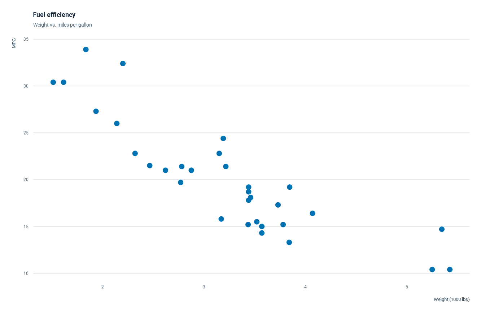
Axis titles are placed at the far end of their axis by default
(corner_axis_titles = TRUE). Set it to FALSE
for centered titles:
ggplot(mtcars, aes(wt, mpg)) +
geom_point(color = "#0072B2", size = 2) +
labs(title = "Fuel efficiency", subtitle = "Weight vs. miles per gallon",
x = "Weight (1000 lbs)", y = "MPG") +
theme_obis(corner_axis_titles = FALSE)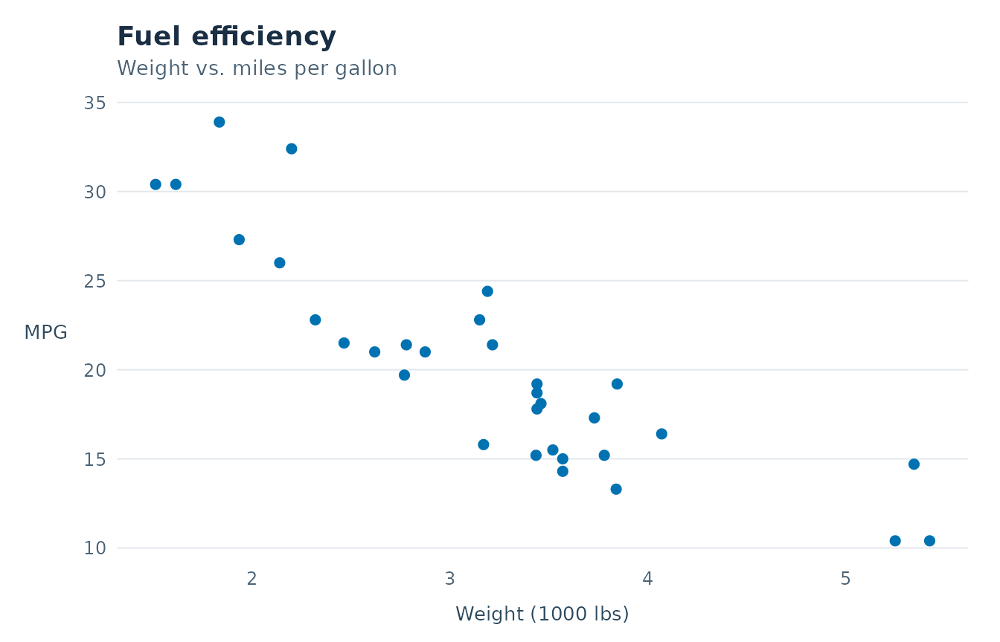
Faceted plots and legend placement also work out of the box:
ggplot(mtcars, aes(wt, mpg)) +
geom_point(color = "#0072B2", size = 2) +
facet_wrap(~cyl) +
labs(title = "Fuel efficiency by cylinder count") +
theme_obis()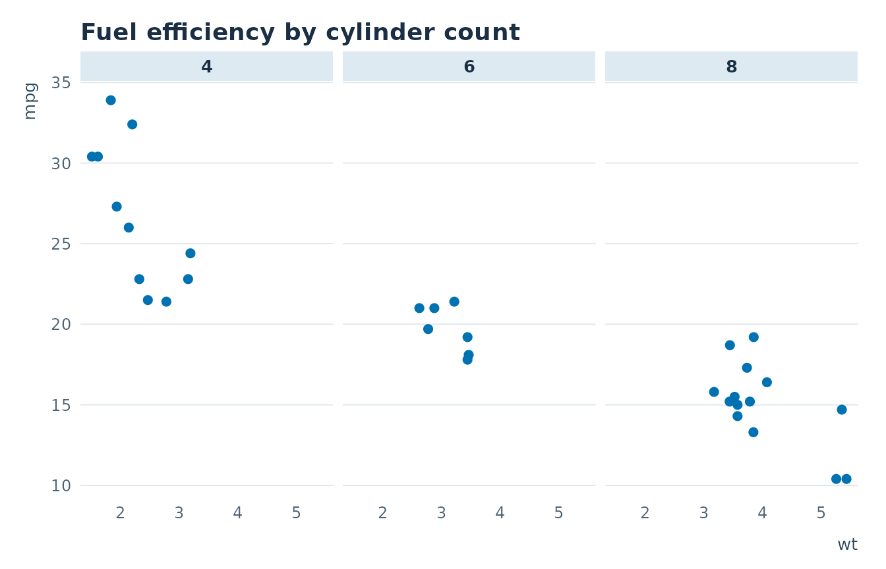
ggplot(iris, aes(Sepal.Length, Petal.Length, color = Species)) +
geom_point(size = 2) +
labs(title = "Iris measurements") +
theme_obis(legend_position = "bottom")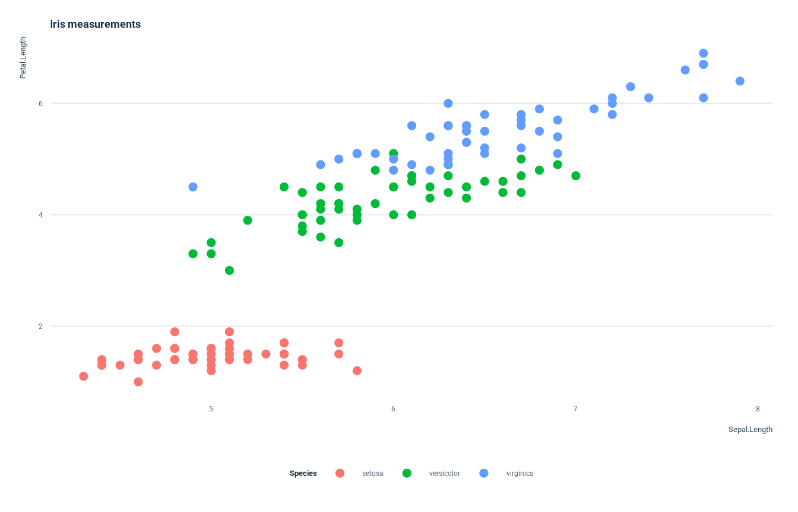
Use base_size to scale everything up for
presentations:
ggplot(mtcars, aes(wt, mpg)) +
geom_point(color = "#009E73", size = 2.5) +
labs(title = "Presentation-ready", x = "Weight", y = "MPG") +
theme_obis(base_size = 14)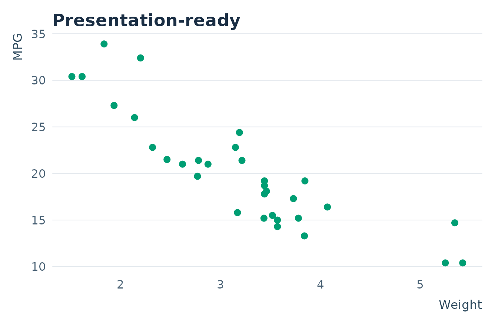
Dark marine theme — theme_obis_dark()
theme_obis_dark() uses a deep navy background that pairs
well with the "mako", "thermal", and
"haline" continuous scales.
ggplot(mtcars, aes(wt, mpg)) +
geom_point(color = "#56B4E9", size = 2) +
labs(title = "Deep ocean style", subtitle = "Weight vs. miles per gallon",
x = "Weight (1000 lbs)", y = "MPG") +
theme_obis_dark()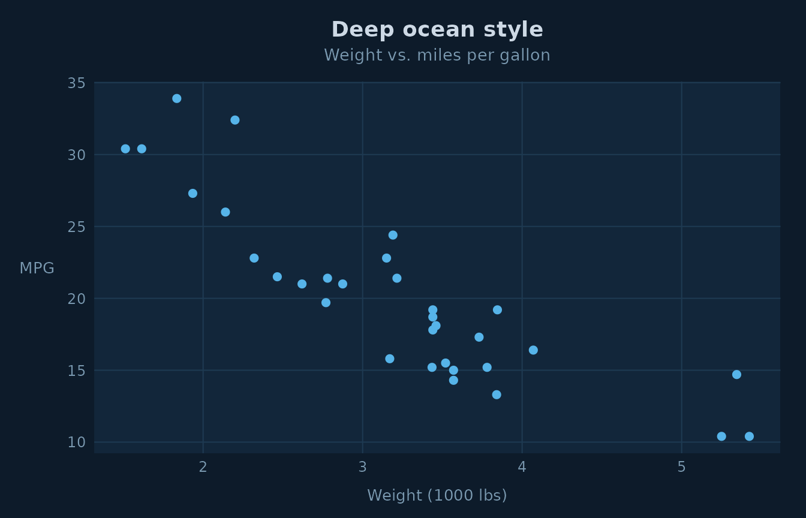
ggplot(faithfuld, aes(waiting, eruptions, fill = density)) +
geom_tile() +
labs(title = "Old Faithful eruption density") +
scale_fill_obis_cont("thermal") +
theme_obis_dark(legend_position = "bottom")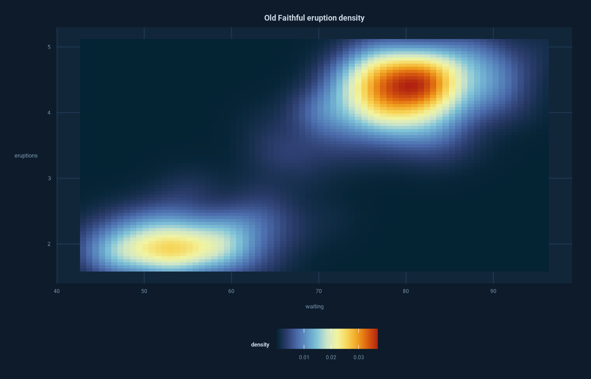
ggplot(iris, aes(Sepal.Length, Petal.Length, color = Species)) +
geom_point(size = 2) +
facet_wrap(~Species) +
labs(title = "Iris by species") +
scale_color_obis_cat() +
theme_obis_dark()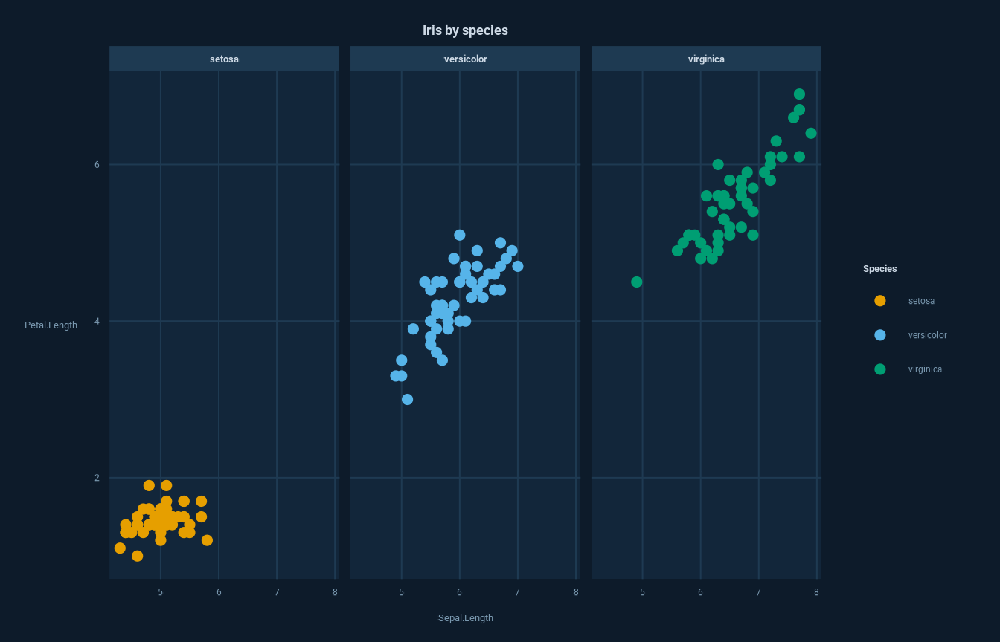
Publication theme — theme_obis_pub()
theme_obis_pub() follows the visual conventions of top
scientific journals (Nature, Science, Cell, One Earth). Key
characteristics:
-
L-shaped axes — bottom and left axis lines only, no
box, from
theme_classic(). - Outward tick marks — black, short (3 pt), with no grid by default.
- No legend box — minimal legend with tight spacing.
- Blank facet strips — bold label above each panel, no coloured background.
- Compact margins — reduces whitespace around the plot area.
The default base_size is 11, comfortable
for screen preview at standard figure dimensions (7 × 5 in). Reduce to
7–8 pt for narrow journal column widths, or let
obis_ggsave() handle the scaling automatically.
ggplot(mtcars, aes(wt, mpg)) +
geom_point(size = 1.5) +
labs(title = "Fuel efficiency",
x = "Weight (1000 lbs)", y = "MPG") +
theme_obis_pub()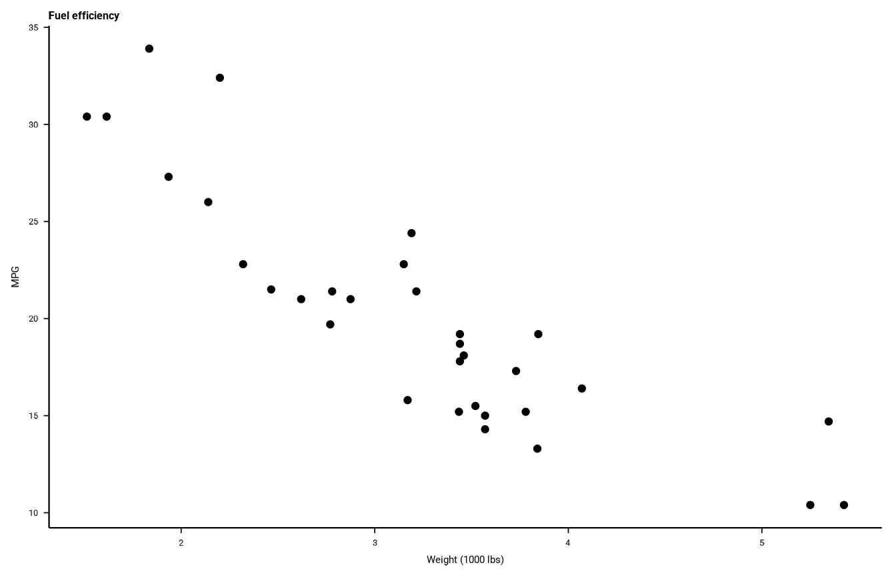
Combine with the colorblind-safe categorical scale and a legend:
ggplot(iris, aes(Sepal.Length, Petal.Length, color = Species)) +
geom_point(size = 1.5) +
scale_color_obis_cat() +
labs(title = "Iris measurements",
x = "Sepal length (cm)", y = "Petal length (cm)") +
theme_obis_pub(legend_position = "bottom")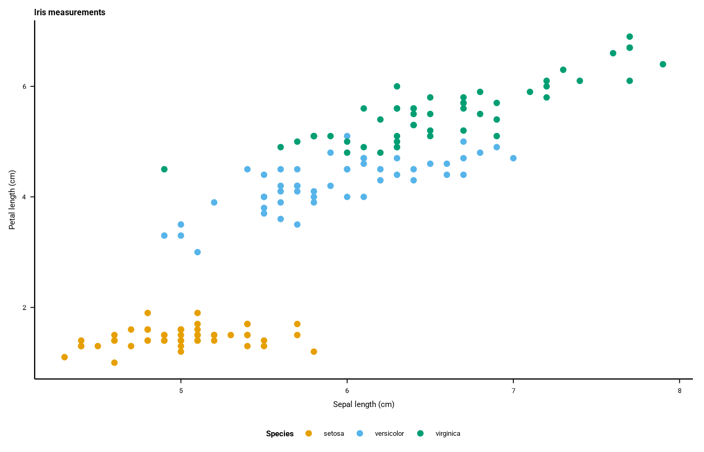
Subtle y-axis reference lines can be enabled with
grid = "y" for plots where reading precise values
matters:
ggplot(mtcars, aes(wt, mpg)) +
geom_point(size = 1.5) +
labs(title = "With reference lines", x = "Weight (1000 lbs)", y = "MPG") +
theme_obis_pub(grid = "y")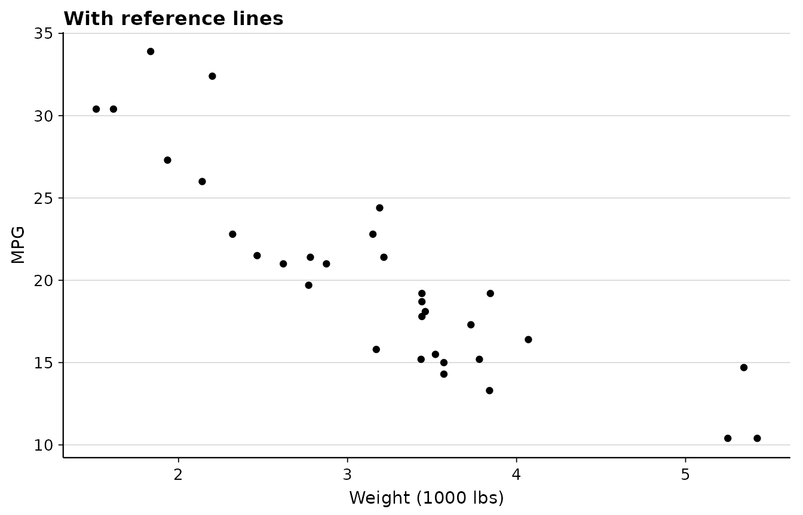
Facets follow the same blank-strip convention used by many journals (panel labels are typically added later via cowplot or patchwork):
ggplot(mtcars, aes(wt, mpg)) +
geom_point(size = 1.5) +
facet_wrap(~cyl) +
labs(title = "Fuel efficiency by cylinder count",
x = "Weight (1000 lbs)", y = "MPG") +
theme_obis_pub()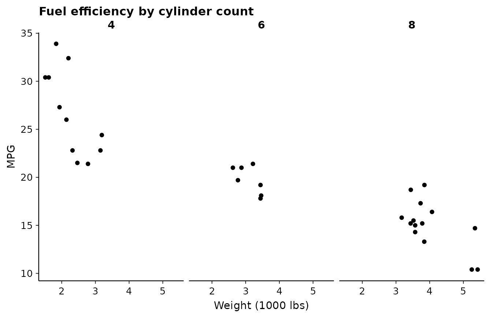
ggplot(faithfuld, aes(waiting, eruptions, fill = density)) +
geom_tile() +
scale_fill_obis_cont("haline") +
guides(fill = guide_colourbar_h(title = "Density")) +
labs(x = "Waiting time (min)", y = "Eruption duration (min)") +
theme_obis_pub(legend_position = "bottom")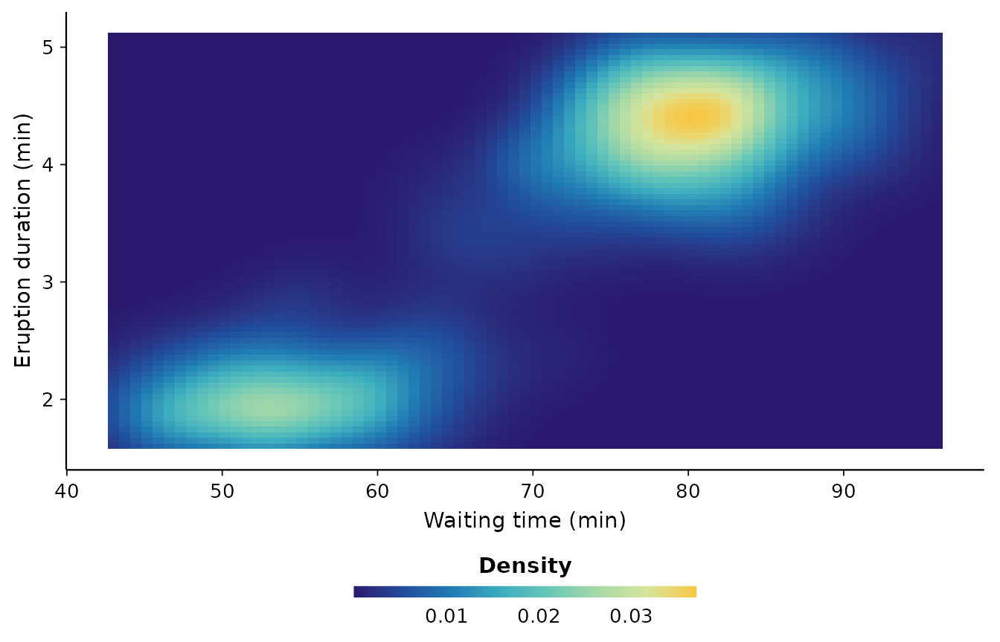
Saving publication figures — obis_ggsave()
A common frustration with ggsave() is that text and
other theme elements are specified in absolute points, so they appear
proportionally smaller when you save a figure at a larger physical size.
obis_ggsave() fixes this by rendering the plot at a
reference size (default 7 × 5 in, matching ggplot2’s
screen default) and then scaling the canvas to the target dimensions.
Text always occupies the same fraction of the figure.
The scaling factor is the geometric mean of the area ratio: .
p_pub <- ggplot(iris, aes(Sepal.Length, Petal.Length, color = Species)) +
geom_point(size = 1.5) +
scale_color_obis_cat() +
labs(title = "Iris measurements",
x = "Sepal length (cm)", y = "Petal length (cm)") +
theme_obis_pub()
# Single-column journal width (3.5 × 2.5 in) — text scales down proportionally
obis_ggsave("fig1_single.pdf", p_pub, width = 3.5, height = 2.5)
# Double-column (7 × 5 in) — same apparent text size as on screen
obis_ggsave("fig1_double.pdf", p_pub, width = 7, height = 5)
# Poster panel (14 × 10 in) — text scales up, remains legible
obis_ggsave("fig1_poster.pdf", p_pub, width = 14, height = 10)
# PNG for journal submission at 300 dpi
obis_ggsave("fig1.png", p_pub, width = 3.5, height = 2.5, dpi = 300)If your figures are authored at a non-default preview size, adjust
ref_width and ref_height accordingly:
# Plot designed for a 5 × 3.5 in RStudio preview
obis_ggsave("fig1.pdf", p_pub, width = 3.5, height = 2.5,
ref_width = 5, ref_height = 3.5)Categorical color scales
scale_color_obis_cat() and
scale_fill_obis_cat() apply one of three colorblind-safe
discrete palettes.
Okabe-Ito (default)
ggplot(iris, aes(Sepal.Length, Petal.Length, color = Species)) +
geom_point(size = 2.5) +
scale_color_obis_cat() +
labs(title = "Okabe-Ito palette", color = "Species") +
theme_obis()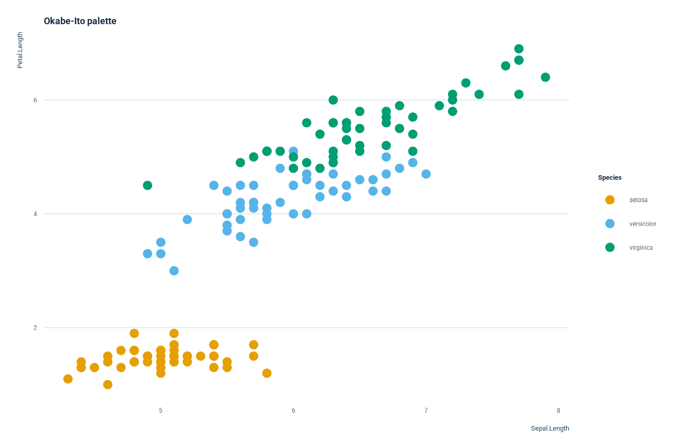
Paul Tol bright
ggplot(iris, aes(Sepal.Length, Petal.Length, color = Species)) +
geom_point(size = 2.5) +
scale_color_obis_cat(palette = "tol") +
labs(title = "Tol bright palette", color = "Species") +
theme_obis()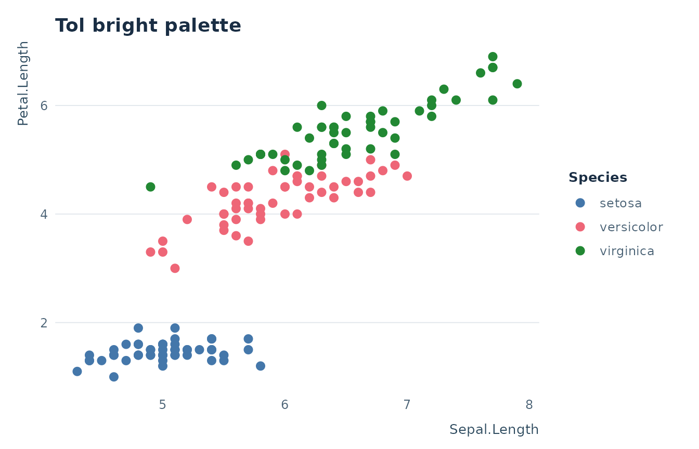
IBM
IBM’s 5-color palette (blue, purple, magenta, orange, gold) is a good choice when the number of categories is ≤ 5 and a cooler, more corporate look is preferred. It works well on both light and dark backgrounds.
ggplot(iris, aes(Sepal.Length, Petal.Length, color = Species)) +
geom_point(size = 2.5) +
scale_color_obis_cat(palette = "ibm") +
labs(title = "IBM palette", color = "Species") +
theme_obis()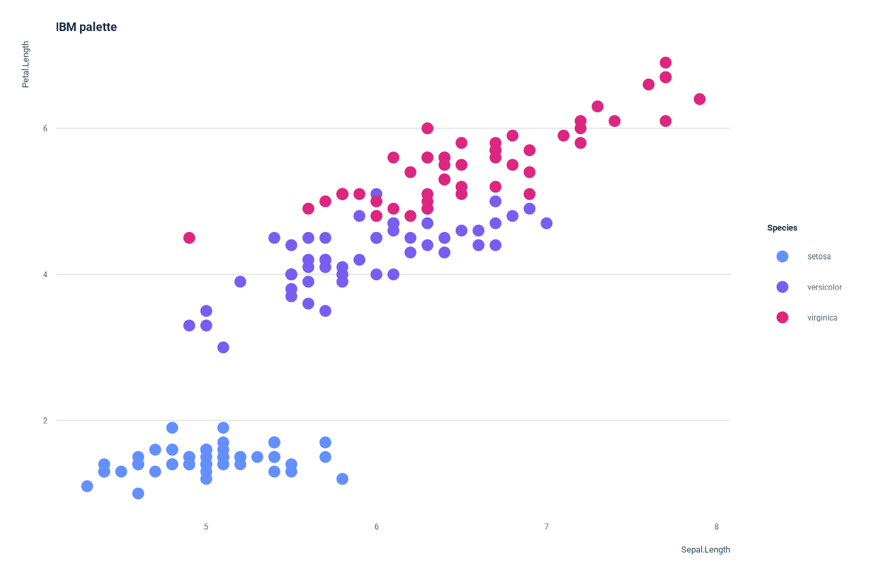
ggplot(iris, aes(Sepal.Length, Petal.Length, color = Species)) +
geom_point(size = 2.5) +
scale_color_obis_cat(palette = "ibm") +
labs(title = "IBM palette — dark theme", color = "Species") +
theme_obis_dark()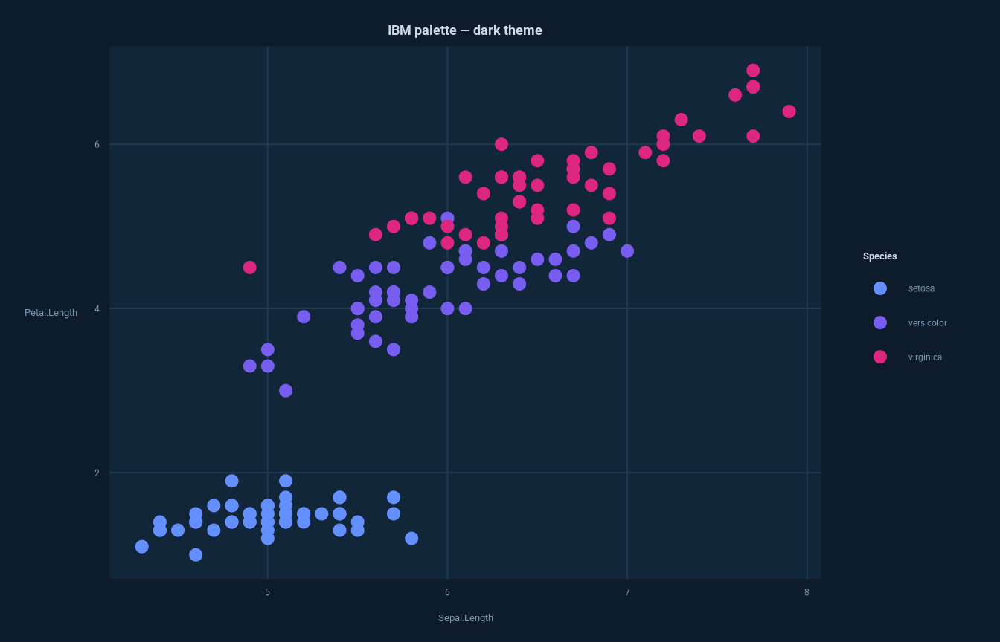
Fill variants
ggplot(mpg, aes(class, fill = drv)) +
geom_bar(position = "dodge") +
scale_fill_obis_cat() +
labs(title = "Drive type by vehicle class", x = NULL, fill = "Drive") +
theme_obis()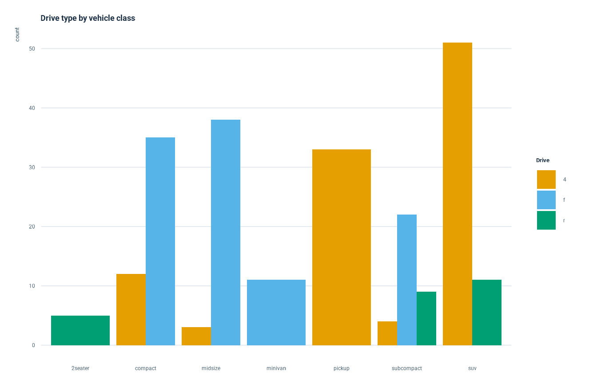
Continuous color scales
scale_fill_obis_cont() and
scale_color_obis_cont() offer nine palettes — five
multi-hue sequential, two diverging, and two single-hue sequential:
| Palette | Origin | Recommended for |
|---|---|---|
"mako" |
viridis | abundance, density |
"cividis" |
viridis | general-purpose (CVD-optimized) |
"thermal" |
cmocean | sea surface temperature |
"haline" |
cmocean | salinity |
"deep" |
cmocean | depth / bathymetry |
"rdbu" |
ColorBrewer | diverging: blue → white → red |
"prgn" |
ColorBrewer | diverging: purple → white → green |
"blues" |
ColorBrewer | single-hue sequential (light → dark blue) |
"greens" |
ColorBrewer | single-hue sequential (light → dark green) |
ggplot(faithfuld, aes(waiting, eruptions, fill = density)) +
geom_tile() +
scale_fill_obis_cont("mako") +
labs(title = "Mako — density", x = "Waiting (min)", y = "Eruption (min)") +
theme_obis()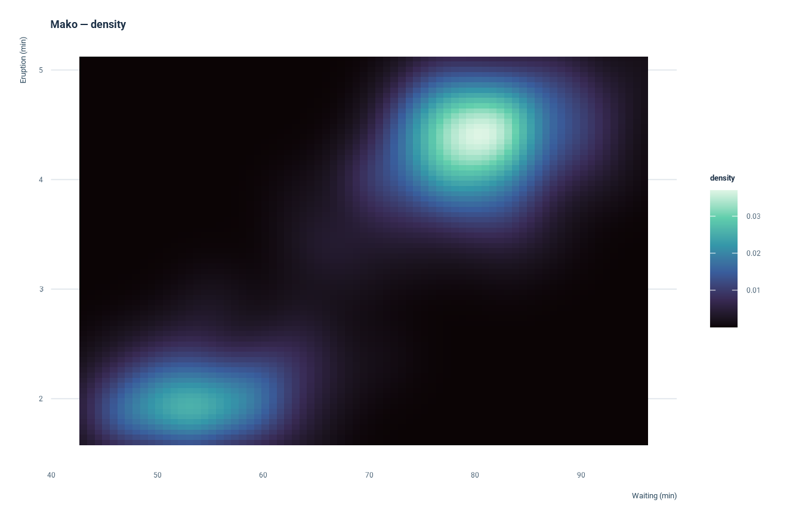
ggplot(faithfuld, aes(waiting, eruptions, fill = density)) +
geom_tile() +
scale_fill_obis_cont("thermal") +
labs(title = "Thermal — SST style") +
theme_obis_dark()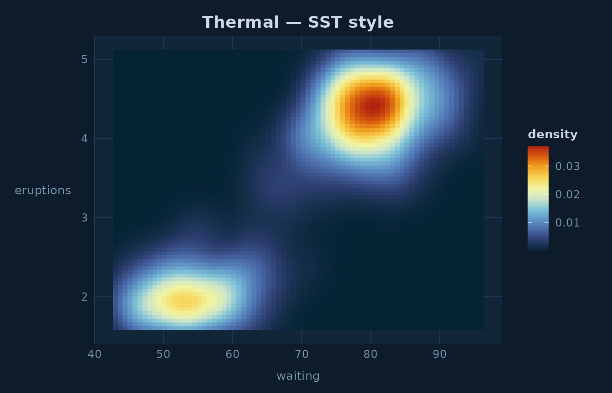
ggplot(faithfuld, aes(waiting, eruptions, fill = density)) +
geom_tile() +
scale_fill_obis_cont("haline") +
labs(title = "Haline — salinity style") +
theme_obis()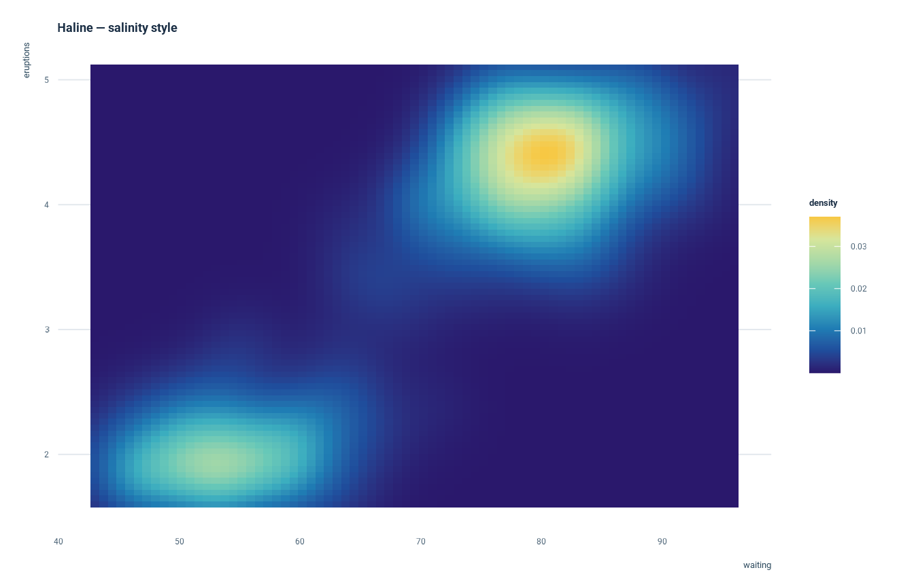
ggplot(faithfuld, aes(waiting, eruptions, fill = density)) +
geom_tile() +
scale_fill_obis_cont("deep", direction = -1) +
labs(title = "Deep — bathymetry style (reversed)") +
theme_obis()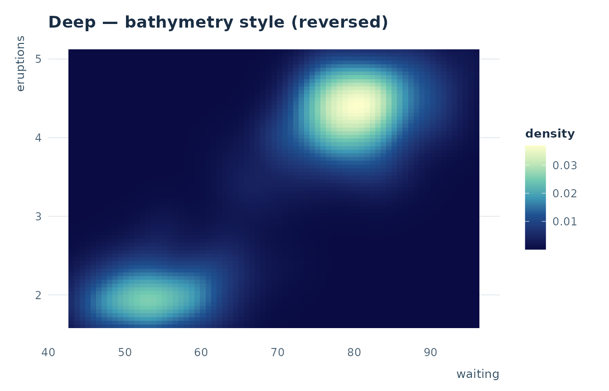
Diverging palettes
Diverging palettes are suited to data with a meaningful midpoint (zero, a reference temperature, a species mean, etc.). Both are 11-stop ColorBrewer palettes with a white neutral centre.
ggplot(faithfuld, aes(waiting, eruptions, fill = density)) +
geom_tile() +
scale_fill_obis_cont("rdbu") +
labs(title = "RdBu — blue to red", x = "Waiting (min)", y = "Eruption (min)") +
theme_obis()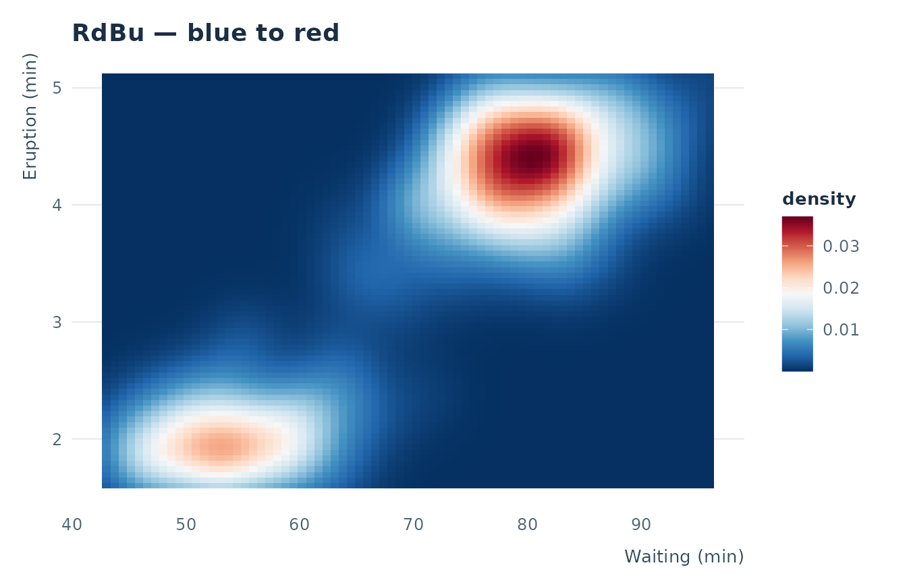
ggplot(faithfuld, aes(waiting, eruptions, fill = density)) +
geom_tile() +
scale_fill_obis_cont("prgn") +
labs(title = "PRGn — purple to green", x = "Waiting (min)", y = "Eruption (min)") +
theme_obis()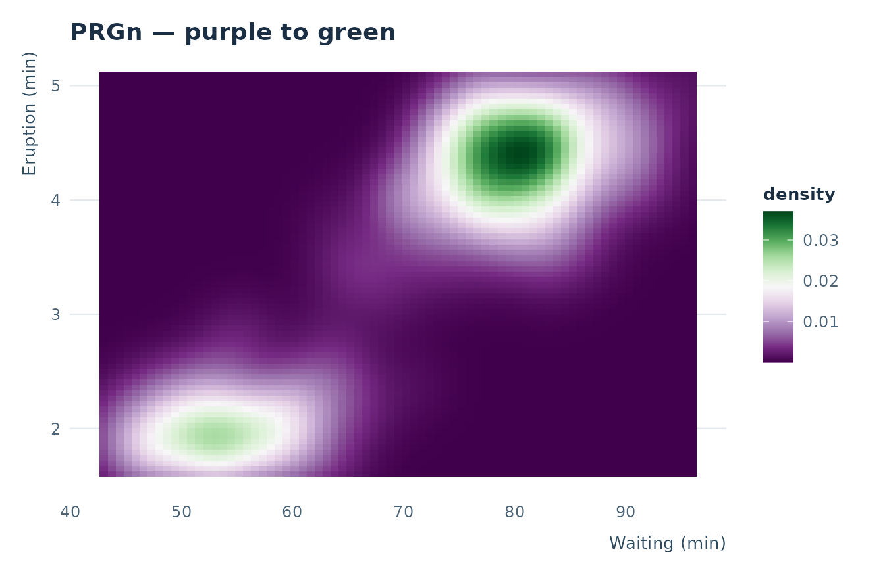
Single-hue sequential palettes
"blues" and "greens" are 9-stop ColorBrewer
palettes running from a near- white tint to a rich dark hue. They work
well whenever a single variable needs to be highlighted without
introducing hue contrast — for example, highlighting species richness or
chlorophyll concentration on a neutral basemap.
ggplot(faithfuld, aes(waiting, eruptions, fill = density)) +
geom_tile() +
scale_fill_obis_cont("blues") +
labs(title = "Blues", x = "Waiting (min)", y = "Eruption (min)") +
theme_obis()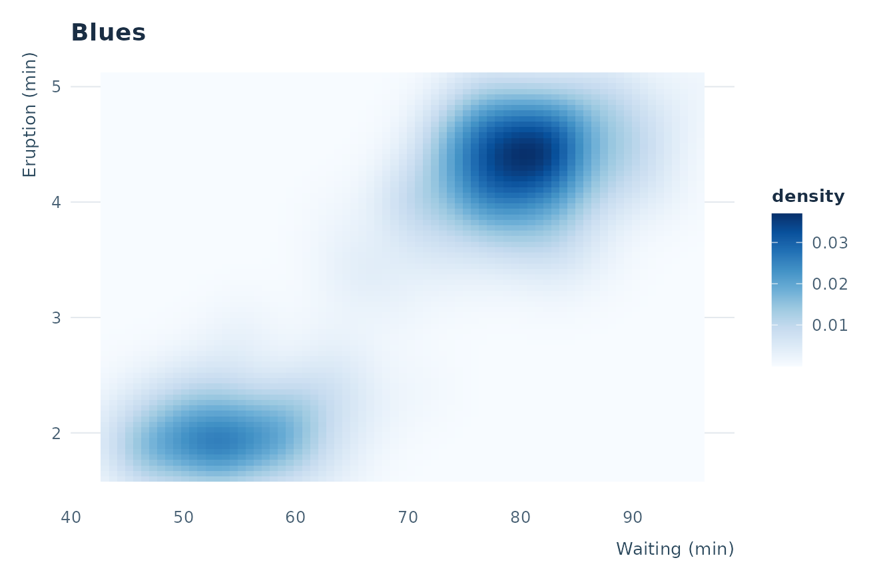
ggplot(faithfuld, aes(waiting, eruptions, fill = density)) +
geom_tile() +
scale_fill_obis_cont("greens") +
labs(title = "Greens", x = "Waiting (min)", y = "Eruption (min)") +
theme_obis()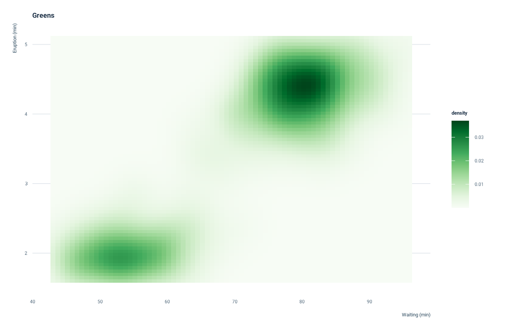
Use direction = -1 to reverse any palette. The scales
also work on the color aesthetic for scatter plots:
ggplot(mtcars, aes(wt, mpg, color = hp)) +
geom_point(size = 3) +
scale_color_obis_cont("haline") +
labs(title = "Continuous color on points", color = "Horsepower") +
theme_obis()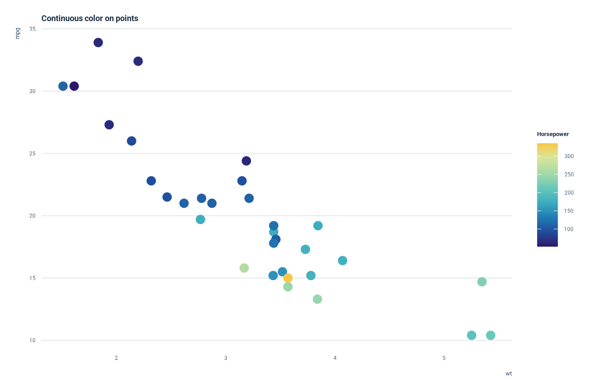
Horizontal colourbar — guide_colourbar_h()
guide_colourbar_h() returns a thin horizontal colourbar
styled similarly to matplotlib’s default. Use it with
guides() when placing the legend at the bottom.
ggplot(faithfuld, aes(waiting, eruptions, fill = density)) +
geom_tile() +
scale_fill_obis_cont("thermal") +
guides(fill = guide_colourbar_h(title = "Density")) +
labs(title = "Horizontal colourbar", x = "Waiting (min)", y = "Eruption (min)") +
theme_obis(legend_position = "bottom")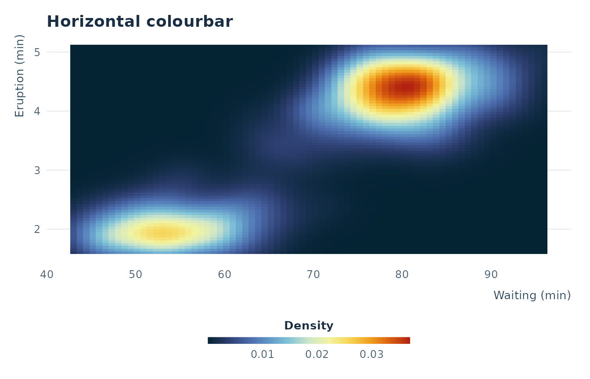
Adjust width and title position as needed:
ggplot(faithfuld, aes(waiting, eruptions, fill = density)) +
geom_tile() +
scale_fill_obis_cont("haline") +
guides(fill = guide_colourbar_h(
title = "Density",
barwidth = grid::unit(16, "lines"),
title_position = "bottom",
title_hjust = 0
)) +
labs(title = "Wider bar, bottom title") +
theme_obis(legend_position = "bottom")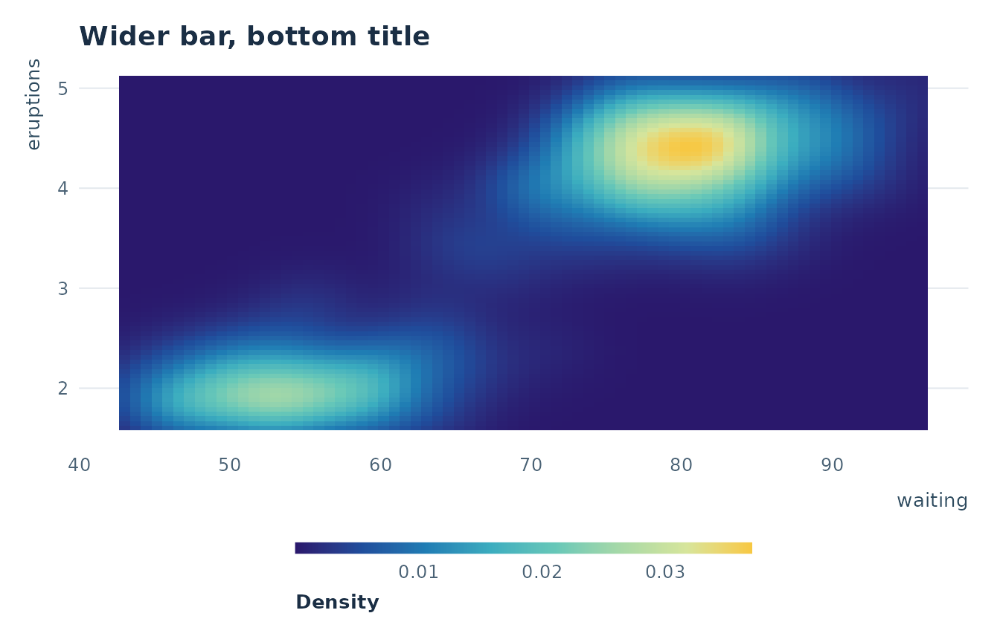
ggplot(faithfuld, aes(waiting, eruptions, fill = density)) +
geom_tile() +
scale_fill_obis_cont("mako") +
guides(fill = guide_colourbar_h(title = "Density")) +
labs(title = "Dark theme with colourbar") +
theme_obis_dark(legend_position = "bottom")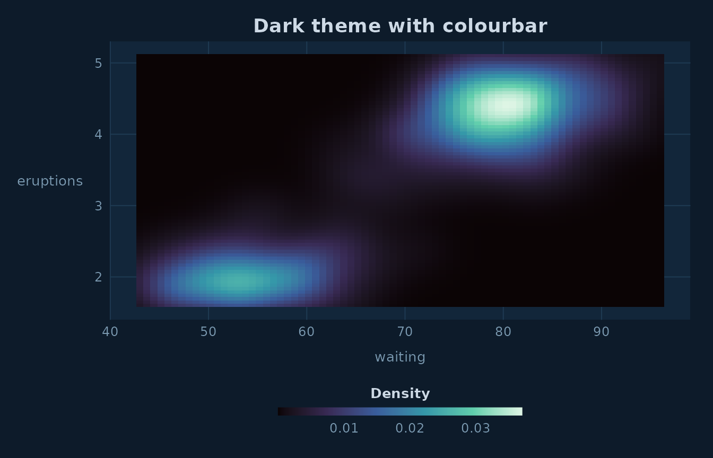
OBIS logo overlay — obis_add_logo()
obis_add_logo() overlays the OBIS and IOC logos at any
corner of a finished plot using cowplot. Pass
fig_asp = width / height to match the dimensions you plan
to use in ggsave().
p_light <- ggplot(mtcars, aes(wt, mpg)) +
geom_point(color = "#0072B2", size = 2) +
labs(title = "Fuel efficiency", subtitle = "Weight vs. miles per gallon",
x = "Weight (1000 lbs)", y = "MPG") +
theme_obis()
obis_add_logo(p_light)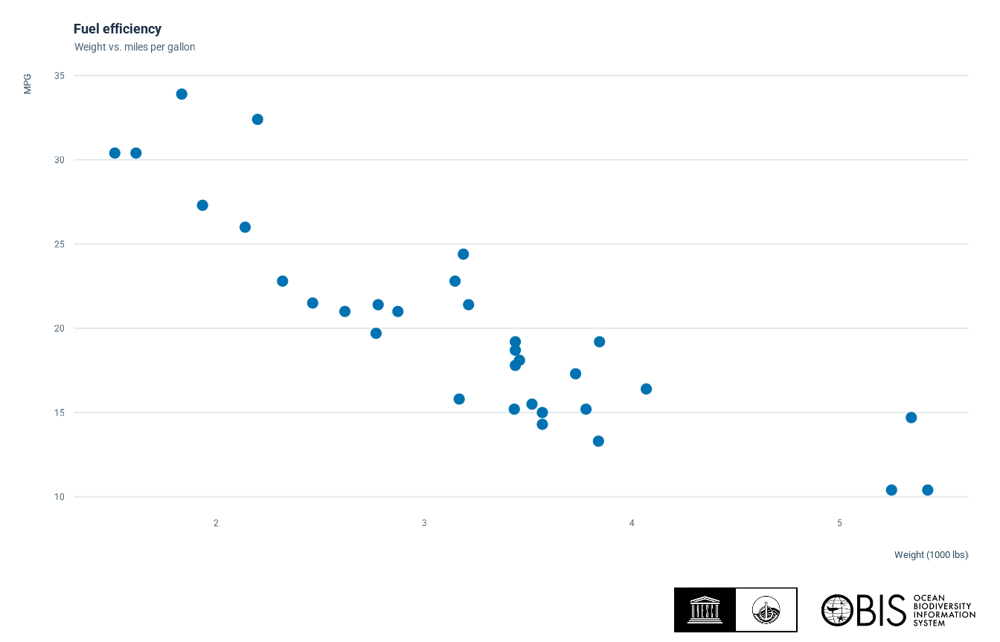
obis_add_logo(p_light, position = "bottomleft")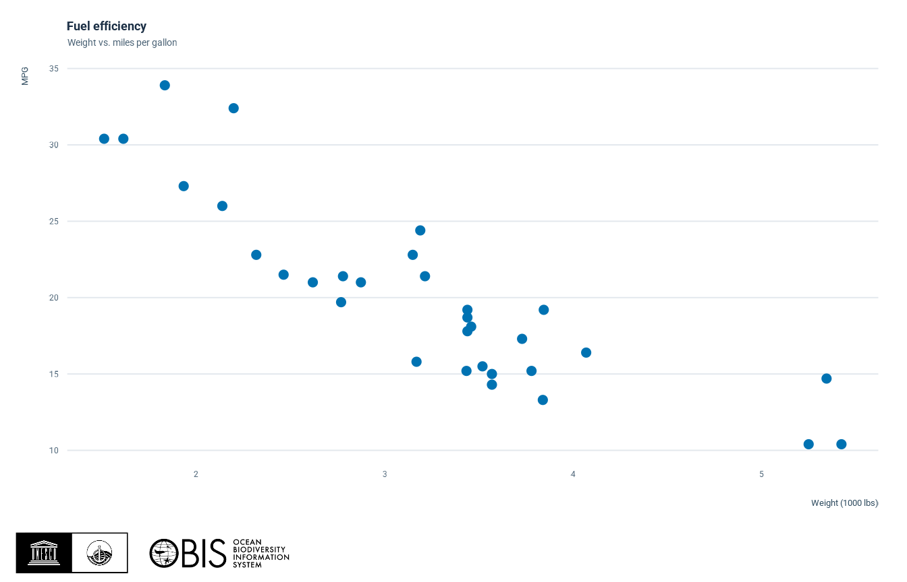
obis_add_logo(p_light, position = "topright")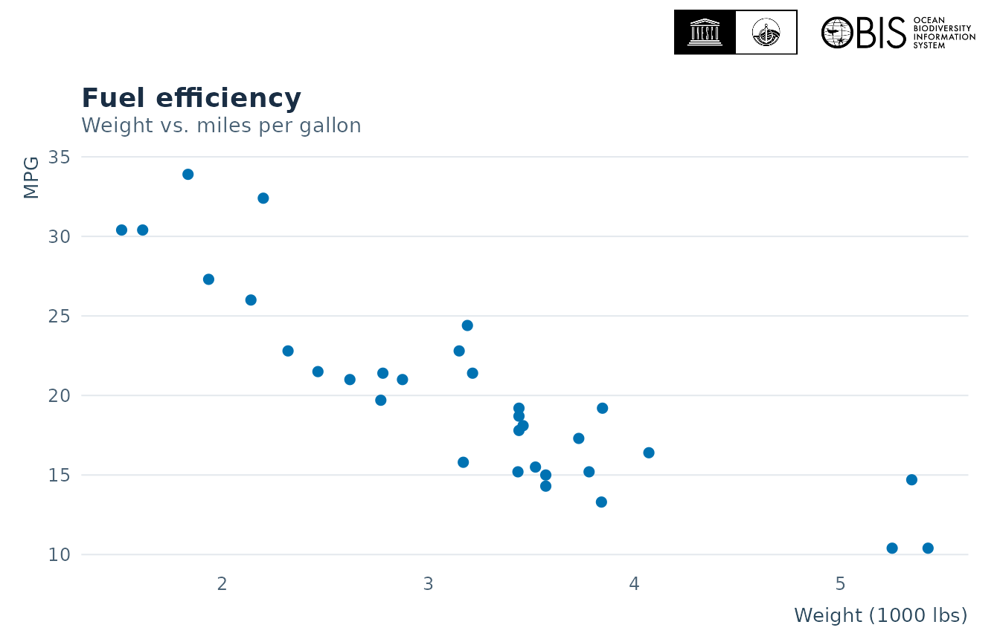
obis_add_logo(p_light, logo_size = 0.10)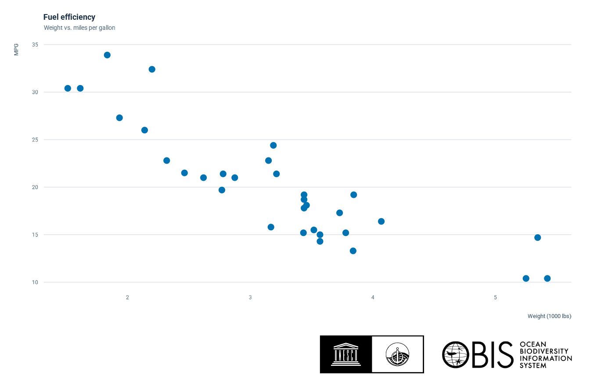
The fig_asp argument corrects logo proportions to match
a specific output size (e.g. 8 × 6 inches):
obis_add_logo(p_light, fig_asp = 8 / 6)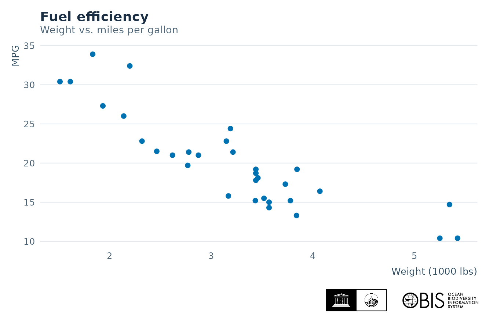
Logos also work on dark theme plots:
p_dark <- ggplot(faithfuld, aes(waiting, eruptions, fill = density)) +
geom_tile() +
scale_fill_obis_cont("thermal") +
guides(fill = guide_colourbar_h(title = "Density")) +
labs(title = "Old Faithful eruption density",
x = "Waiting time (min)", y = "Eruption duration (min)") +
theme_obis_dark(legend_position = "bottom")
obis_add_logo(p_dark)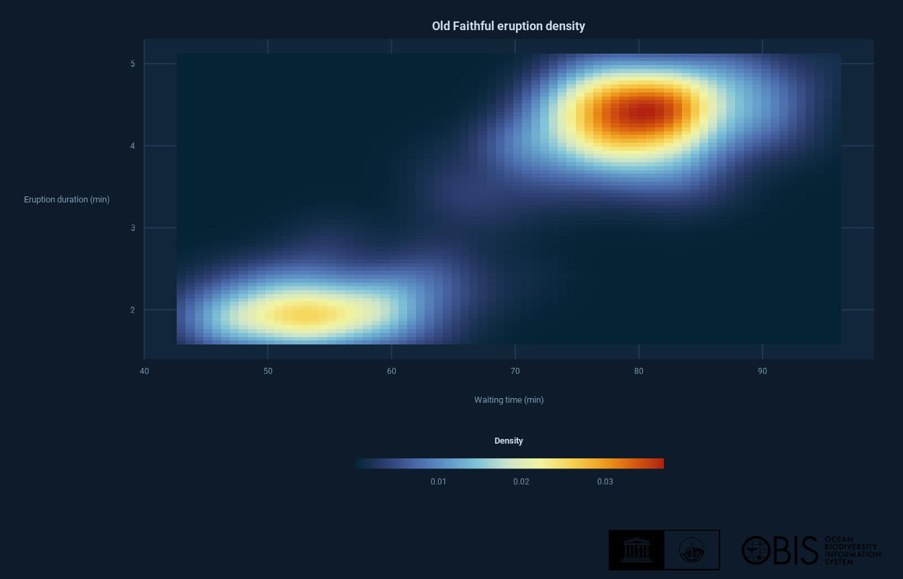
Putting it all together
A combined plot mixing categorical shape and continuous color scales with the horizontal colourbar:
ggplot(mtcars, aes(wt, mpg, color = hp, shape = factor(cyl))) +
geom_point(size = 3) +
scale_color_obis_cont("mako") +
scale_shape_manual(values = c(16, 17, 18)) +
guides(color = guide_colourbar_h(title = "Horsepower",
barwidth = grid::unit(8, "lines"))) +
labs(title = "Combined scales", x = "Weight", y = "MPG",
shape = "Cylinders") +
theme_obis(legend_position = "bottom")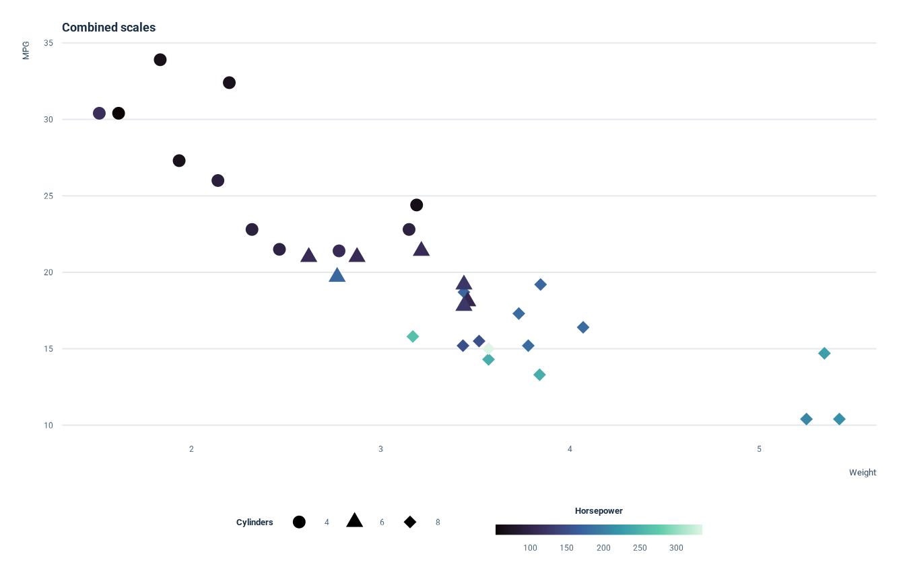
A full dark marine look with title, subtitle, and caption:
ggplot(faithfuld, aes(waiting, eruptions, fill = density)) +
geom_tile() +
scale_fill_obis_cont("thermal") +
guides(fill = guide_colourbar_h(title = "Density")) +
labs(
title = "Old Faithful eruption patterns",
subtitle = "Kernel density estimate",
caption = "Source: R datasets",
x = "Waiting time (min)", y = "Eruption duration (min)"
) +
theme_obis_dark(legend_position = "bottom")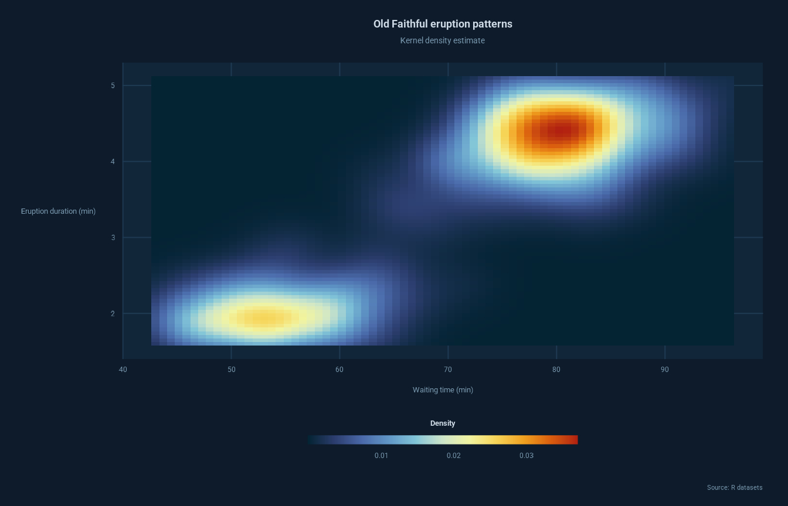